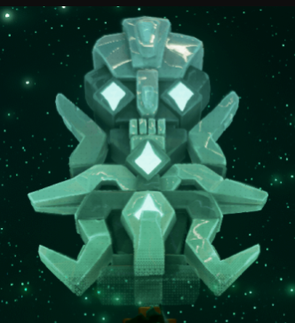

La Mer Des Voleurs n'est point un lieu dont on a découvert tout les secrets ces pourquoi vous pouvez embarquer dans différentes fables plus fantastiques que les autres Tel qu'une quête pour aller chercher un trésor antique dans les "Shores Of Gold" entouré par une brume magique ou encore partir sauver la Mer Des Voleurs avec et à cause de Jack Sparrow De Davy Jones
Depuis L'arrivée des pirates dans la Mer Des Voleurs une certaine partie est à la fois envelppé tout autant de mystère que d'une brume impenetrable
une cabine étrange est apparue sur tout les avant-postes de Sea Of Thieves on dit qu'elle est habité par une étrangère en capuchonné qui prévient les pirates qu'un danger planes sur La Mer Des Voleurs dernièrement Prendrez votre courage d'une main et de votre crochet votre grog pour écouter ce qu'elle à dire alors n'attendez plus et venez lire son récit